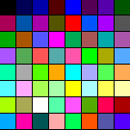
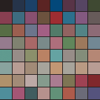

PhotoWatch configuration 0.5
Upload Image:
...or paste Image URL:
Original
Zoom:
Real Pebble view
🪄 Auto-Fix
Reset
Gamma (Mid-tones):
Brightness:
Contrast:
Saturation:
Sharpen (Structure):
3. Export (Standard)
Send to watch

